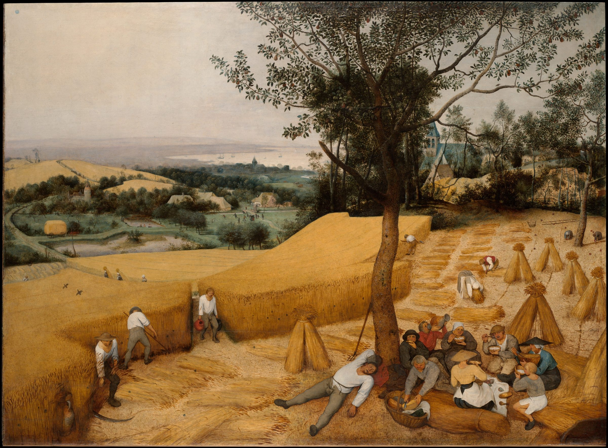
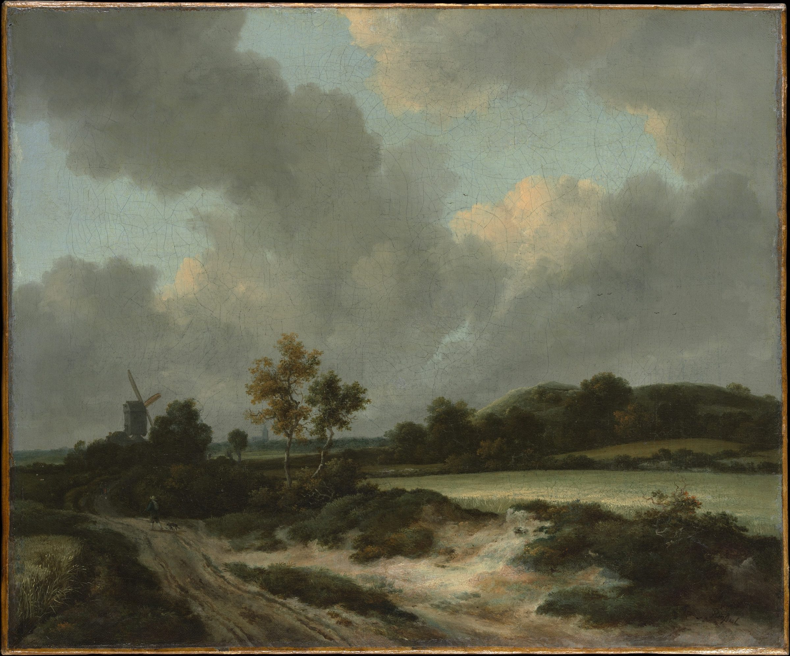

No. 01
이번 주일 · 9월 27일
민수기 14장 8-9절

이번 주 예배 순서와 소식
매일 아침 7시 말씀묵상으로 하루를 엽니다
이애실 사모 강의애실쌤과 365성경읽기 · 생터성경사역원
어? 성경이 읽어지네
2026-09-27 · 민수기 14장 8-9절
2026-09-20 · 레위기 16장 30절
2026-09-13 · 출애굽기 6장 6-7절
아침 QT 예배
따로 신청하실 것이 없습니다. 예배 시간에 오시면 됩니다.
주일 오전 11시 예배로 오시면 됩니다.
다른 예배·모임 시간은 예배 안내에 있습니다.
경기 광명시 기아로 23 (소하동) 4층.
자가용·대중교통 안내는 오시는 길에 있습니다.
카카오 오픈채팅으로 목사님과 바로 이야기하실 수 있습니다.
★이 페이지는 이름·연락처를 입력받지 않습니다. 개인정보를 한 글자도 받지 않습니다.
경기 광명시 기아로 23(소하동) 4층